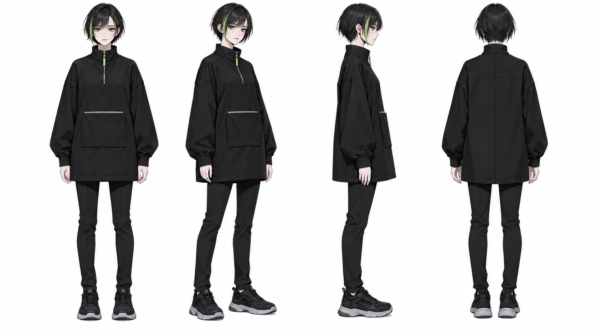
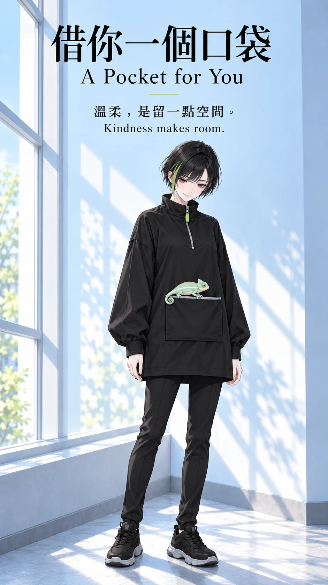

更新日期：2026-11-01
狀態：已確認方案；雙語文字、15 張圖像、字幕與本地圖像總覽已完成並核對。實際影片與音訊尚未生成。
風格：S12｜俯視叛逆時裝編輯。英文描述：High-Angle Fashion-Editorial Anime。
全片 60 秒＝片頭 5 秒＋正片 10 鏡各 5 秒＋片尾 5 秒。
圖像總覽｜分鏡圖像提示詞｜12 段影片提示詞｜資產清單｜核對報告
正式分鏡補充：少女原本追求醒目的服裝照片，察覺變色龍退縮後，先調柔燈光，再展平袋緣。牠由袖口自行移至袋緣，少女不推、不抓，也不把牠塞進袋內。結局把「耀眼」轉為「安心也很漂亮」。
| 項目 | 中文 | English |
|---|---|---|
| 大標題 | 借你一個口袋 | A Pocket for You |
| 副標題 | 溫柔，是留一點空間。 | Kindness makes room. |
中英文已逐句核對語法與情緒，採自然詩意對應。中文字幕每鏡 6 字，英文每鏡 2–5 個單字。字幕以後製軌交付，十鏡原圖不寫入文字。
10為棚內俯視坐姿；片尾已轉到窗邊站姿，仍是同一外套與同一袋緣停棲狀態。
正面機位對位：本人右臂在畫面左側，右袖口接近袋口的畫面左側角；左手由畫面右側整理對側袋緣。06–07兩塊布料相接，動物不作懸空跨越。
| 段落 | 全片時間 | 時長 |
|---|---|---|
| 片頭 | 00:00–00:05 | 5 秒 |
| 十鏡正片 | 00:05–00:55 | 50 秒 |
| 片尾 | 00:55–01:00 | 5 秒 |
| 鏡號／類型 | 小標題／English | 全片時間 | 中文字幕 | English Caption | 長度 |
|---|---|---|---|---|---|
| 01 俯視全景 / High-angle full shot | 黑衣亮相 / Ready to Shine | 5–10 秒 | 今天想要耀眼 | Ready to shine. | 5 秒 |
| 02 俯視特寫 / Top-down detail | 光斑移近 / The Light Comes Closer | 10–15 秒 | 光斑忽然靠近 | Light comes closer. | 5 秒 |
| 03 微距近景 / Macro close-up | 袖邊退縮 / Drawing Inward | 15–20 秒 | 你把身影縮小 | You draw inward. | 5 秒 |
| 04 俯視近景 / High-angle close-up | 俯身察覺 / Noticing Your Fear | 20–25 秒 | 原來你也會怕 | I see your fear. | 5 秒 |
| 05 手部特寫 / Hand close-up | 柔光停駐 / Softening the Light | 25–30 秒 | 先把光放柔些 | Soften the light. | 5 秒 |
| 06 俯視中景 / High-angle medium shot | 展平袋緣 / Making a Little Room | 30–35 秒 | 留一個小角落 | A little room. | 5 秒 |
| 07 局部近景 / Detail close-up | 慢慢靠近 / Take Your Time | 35–40 秒 | 你可慢慢靠近 | Take your time. | 5 秒 |
| 08 微距近景 / Macro close-up | 袋緣停棲 / A Safe Perch | 40–45 秒 | 這裡不用逞強 | Rest here. | 5 秒 |
| 09 人物近景 / Portrait close-up | 眼底放柔 / A Softer Gaze | 45–50 秒 | 安心也很漂亮 | Comfort is beautiful. | 5 秒 |
| 10 俯視全景 / High-angle full shot | 安心成像 / A Portrait of Comfort | 50–55 秒 | 溫柔自有光芒 | Kindness has a glow. | 5 秒 |
類型：俯視全景 / High-angle full shot；全片 5–10 秒，共 5 秒。
中文
俯視少女在冰藍棚內站定，右前臂橫在腰腹前支撐小變色龍，左手低放。中央大口袋與黑外套量體清楚，灰椅在後左、棚燈在後右。
English
From above, Mio stands in the ice-blue studio, right forearm across her waist supporting Mint and left hand lowered. The centered pocket and coat volume are clear; chair is rear-left, light rear-right.
字幕：今天想要耀眼 / Ready to shine.
聲音建議：棚內低環境聲、外套布料輕響。
中文
9:16直式單張分鏡，無文字、字幕、標誌或浮水印。S12｜俯視叛逆時裝編輯。寬鬆黑色服裝大剪影、冷白膚色、淺冰藍背景、極少萊姆綠點綴；俐落輪廓、平滑半色調與有限硬邊陰影並用，以俯視機位、服裝量體和留白建立時裝感。精緻二維動漫，不作攝影寫實、3D或粉彩糖果畫法。同一座空攝影棚：淺冰藍無縫背景與啞光地面，後左方一張簡單灰色座椅、四支細黑腿；後右方只有一盞黑框連續式LED棚燈與三腳燈架，側面一枚無字圓形柔光模式鈕。01–03窄光斑緩慢移過地面，04察覺，05切換柔光，06後固定低對比柔光，不閃爍。無觀眾、反光地板、背景星圖、品牌標籤或可讀控制面板。外套口袋始終是下腹正中央同一片長方形貼袋，淡灰上緣內裡可見，不變成側袋、拉鍊袋或手提袋。01–04變色龍在少女右袖靠腕部，05仍由右前臂支撐、在畫外；06少女已坐下，右前臂橫放腰腹前、袖口緊鄰袋緣，左手只展平袋口。07牠自行由袖口往袋緣爬，08後四足在袋緣外側有支撐、身體可見，尾巴只輕捲一圈，不被塞入袋內。角色依設定圖與共同比例；只加入本鏡指定角色。無多餘肢體、六指、重複口袋、布料穿插、懸空足、速度線、搖動弧線、殘影或地面倒影。澪，20歲少女服裝設計生，約166公分、纖細七點五頭身時裝比例，冷白膚色、炭灰眼，墨黑及下巴短精靈鮑伯髮，本人右側一束細淡萊姆綠挑染，其餘可有極淡同色反光。黑色無帽寬版繭形外套至大腿中段，落肩寬長袖與固定袖口，立領到胸口只有一段銀色短拉鍊、萊姆綠小拉片；下腹正中央一個約24×16公分長方形貼袋，頂端水平開口、淡灰內裡，無袋蓋、側開口、第二口袋或背袋。黑合身長褲、厚底黑踝運動鞋與冰灰薄鞋邊。無帽、手套、飾品或背包。薄荷，小型淡薄荷綠變色龍，伸尾全長約14公分、頭身約8公分、單一可捲尾約6公分，平時輕捲一圈；淡奶油色側線從臉側延至尾根，淺色腹部，低三角頭冠與細小背脊，圓錐眼瞼、琥珀棕虹膜與小黑瞳。四隻短足、分束對握趾形，抓握衣料而非壁虎吸盤；無角、長刺或第二條尾巴。全片固定淡薄荷綠，不變色、不吐舌。俯視少女在冰藍棚內站定，右前臂橫在腰腹前支撐小變色龍，左手低放。中央大口袋與黑外套量體清楚，灰椅在後左、棚燈在後右。
English
Use case: illustration-story. ONE portrait9:16 storyboard, ideally864x1536. NO lettering/captions/logos/watermark. S12 high-angle rebellious fashion-editorial anime: oversized black clothing silhouette, cool pale skin, ice-blue negative space, tiny lime accents; clean contours, smooth broad half-tones with limited hard-edged shadows, elevated camera and clothing volume. Refined2D anime, not photography,3D or candy pastel illustration. One empty studio: ice-blue seamless backdrop and matte floor, ONE simple gray chair with four slim black legs at rear-LEFT; ONE black-frame continuous LED studio light on tripod at rear-RIGHT, one blank round soft-mode control on side.01–03 a narrow light pool drifts slowly over floor;04 notices;05 switches soft mode;06 onward fixed gentle low-contrast light, no flashing. No audience, mirror floor, star graphics, logos or readable controls. Coat has SAME centered lower-front rectangular patch pocket with pale-gray inner top rim throughout, never side pocket/zip pouch/bag.01–04 chameleon on RIGHT sleeve near wrist;05 still supported on right forearm off-frame.06 girl already seated, right forearm across lower abdomen so CUFF touches pocket rim, LEFT hand only smooths top edge.07 animal moves itself cuff-to-rim;08 onward feet supported on OUTSIDE rim, body visible, one loose tail curl, never stuffed into pocket. Reference sheets lock identity/scale, NOT composition. Only listed visible actors. No extra limbs/digits, duplicate pockets, cloth intersections, unsupported feet, motion marks/arcs/trails or mirrored floor. Mio,20-year-old female fashion-design student,166cm, slender7.5-head fashion proportions, cool pale skin, charcoal-gray eyes, jaw-length ink-black pixie bob, one thin muted-lime forelock on HER RIGHT with only faint related edge highlights elsewhere. Oversized BLACK hoodless cocoon anorak to mid-thigh, dropped shoulders, wide long sleeves/fixed cuffs, stand collar with short silver zipper ending at CHEST and tiny lime pull. ONE centered lower-front rectangular24x16cm PATCH POCKET, horizontal OPEN TOP with pale-gray lining, no flap/side opening/second pocket/back pocket. Black fitted trousers, chunky black ankle sneakers with ice-gray sole edge. No hat, gloves, jewelry or bag. Mint, small PALE MINT GREEN chameleon, about14cm uncurled total,8cm head/body plus ONE6cm prehensile tail usually loosely curled once. Subtle cream side stripe cheek to tail root, pale belly, triangular casque/fine dorsal ridge, turret eyelids with amber-brown iris/small black pupil. FOUR short legs, opposing grasping toe groups on cloth, not gecko toe pads; no horns/long spikes/second tail. Fixed pale mint throughout, NO color changes or tongue flicks. Elevated45-degree DOWNWARD full-body fashion shot, Mio centered, confident quiet expression looking slightly up, black cocoon coat broad silhouette and ONE centered front patch pocket visible. RIGHT forearm across lower abdomen at waist, tiny mint chameleon naturally on right SLEEVE cuff, no bare-hand grip. LEFT arm hangs relaxed empty at side. Entire two shoes on ice-blue matte floor, natural perspective not giant chibi head. Gray chair rear-left, ONE LED light/tripod rear-right, initial narrow light pool on floor off to right. Tiny lime zipper pull/forelock only accent, no star graphics or lettering.
中文
以shot_01.png為起始幀，9:16。5秒，高機位緩推約3%；少女輕調重心一次，右前臂保持平穩支撐，左手不抓動物。地面光斑緩移，變色龍不變色。 固定兩臂、同一短髮與中央貼袋、袖口上的單一薄荷綠變色龍、四足一尾。無文字、速度線、殘影、新角色或變色。
English
Use shot_01.png as starting frame,9:16. 5 seconds, high-angle3% push-in. Girl shifts weight slightly once, RIGHT forearm stays steady, LEFT hand never grips animal. Floor pool drifts slowly; chameleon color fixed. Preserve two human arms, same hair and central patch pocket, ONE pale-mint chameleon on cuff with four legs and one tail. No text, motion marks, trails, new actors or color change.
類型：俯視特寫 / Top-down detail；全片 10–15 秒，共 5 秒。
中文
略俯視地面與少女鞋尖，一道較硬的白色光斑靠近，兩腳仍分開站穩。變色龍與手部在畫外，沒有閃光或倒影。
English
A downward detail shows a harder white light pool nearing her shoes. Both feet stay planted; hands and Mint remain off-screen, without flash or reflection.
字幕：光斑忽然靠近 / Light comes closer.
聲音建議：輕微燈架馬達聲，不用快門閃光聲。
中文
9:16直式單張分鏡，無文字、字幕、標誌或浮水印。S12｜俯視叛逆時裝編輯。寬鬆黑色服裝大剪影、冷白膚色、淺冰藍背景、極少萊姆綠點綴；俐落輪廓、平滑半色調與有限硬邊陰影並用，以俯視機位、服裝量體和留白建立時裝感。精緻二維動漫，不作攝影寫實、3D或粉彩糖果畫法。同一座空攝影棚：淺冰藍無縫背景與啞光地面，後左方一張簡單灰色座椅、四支細黑腿；後右方只有一盞黑框連續式LED棚燈與三腳燈架，側面一枚無字圓形柔光模式鈕。01–03窄光斑緩慢移過地面，04察覺，05切換柔光，06後固定低對比柔光，不閃爍。無觀眾、反光地板、背景星圖、品牌標籤或可讀控制面板。外套口袋始終是下腹正中央同一片長方形貼袋，淡灰上緣內裡可見，不變成側袋、拉鍊袋或手提袋。01–04變色龍在少女右袖靠腕部，05仍由右前臂支撐、在畫外；06少女已坐下，右前臂橫放腰腹前、袖口緊鄰袋緣，左手只展平袋口。07牠自行由袖口往袋緣爬，08後四足在袋緣外側有支撐、身體可見，尾巴只輕捲一圈，不被塞入袋內。角色依設定圖與共同比例；只加入本鏡指定角色。無多餘肢體、六指、重複口袋、布料穿插、懸空足、速度線、搖動弧線、殘影或地面倒影。澪，20歲少女服裝設計生，約166公分、纖細七點五頭身時裝比例，冷白膚色、炭灰眼，墨黑及下巴短精靈鮑伯髮，本人右側一束細淡萊姆綠挑染，其餘可有極淡同色反光。黑色無帽寬版繭形外套至大腿中段，落肩寬長袖與固定袖口，立領到胸口只有一段銀色短拉鍊、萊姆綠小拉片；下腹正中央一個約24×16公分長方形貼袋，頂端水平開口、淡灰內裡，無袋蓋、側開口、第二口袋或背袋。黑合身長褲、厚底黑踝運動鞋與冰灰薄鞋邊。無帽、手套、飾品或背包。略俯視地面與少女鞋尖，一道較硬的白色光斑靠近，兩腳仍分開站穩。變色龍與手部在畫外，沒有閃光或倒影。
English
Use case: illustration-story. ONE portrait9:16 storyboard, ideally864x1536. NO lettering/captions/logos/watermark. S12 high-angle rebellious fashion-editorial anime: oversized black clothing silhouette, cool pale skin, ice-blue negative space, tiny lime accents; clean contours, smooth broad half-tones with limited hard-edged shadows, elevated camera and clothing volume. Refined2D anime, not photography,3D or candy pastel illustration. One empty studio: ice-blue seamless backdrop and matte floor, ONE simple gray chair with four slim black legs at rear-LEFT; ONE black-frame continuous LED studio light on tripod at rear-RIGHT, one blank round soft-mode control on side.01–03 a narrow light pool drifts slowly over floor;04 notices;05 switches soft mode;06 onward fixed gentle low-contrast light, no flashing. No audience, mirror floor, star graphics, logos or readable controls. Coat has SAME centered lower-front rectangular patch pocket with pale-gray inner top rim throughout, never side pocket/zip pouch/bag.01–04 chameleon on RIGHT sleeve near wrist;05 still supported on right forearm off-frame.06 girl already seated, right forearm across lower abdomen so CUFF touches pocket rim, LEFT hand only smooths top edge.07 animal moves itself cuff-to-rim;08 onward feet supported on OUTSIDE rim, body visible, one loose tail curl, never stuffed into pocket. Reference sheets lock identity/scale, NOT composition. Only listed visible actors. No extra limbs/digits, duplicate pockets, cloth intersections, unsupported feet, motion marks/arcs/trails or mirrored floor. Mio,20-year-old female fashion-design student,166cm, slender7.5-head fashion proportions, cool pale skin, charcoal-gray eyes, jaw-length ink-black pixie bob, one thin muted-lime forelock on HER RIGHT with only faint related edge highlights elsewhere. Oversized BLACK hoodless cocoon anorak to mid-thigh, dropped shoulders, wide long sleeves/fixed cuffs, stand collar with short silver zipper ending at CHEST and tiny lime pull. ONE centered lower-front rectangular24x16cm PATCH POCKET, horizontal OPEN TOP with pale-gray lining, no flap/side opening/second pocket/back pocket. Black fitted trousers, chunky black ankle sneakers with ice-gray sole edge. No hat, gloves, jewelry or bag. Top-down angled close detail of ONLY two black chunky sneakers/black trouser hems and ice-blue matte floor. ONE narrow pale-white light pool at RIGHT near but not engulfing shoes, hard-ish edge from off-frame rear-right studio light. Boots/sneakers on floor, no extra feet or reflections. No actual girl head/hands/animal, no colored motion arcs, stars, laser cone or flashing graphics. Minimal editorial black shapes on ice-blue negative space.
中文
以shot_02.png為起始幀，9:16。5秒，固定俯視；地面光斑只緩移一小段到鞋邊後停下，雙腳維持原位，不生成閃爍、殘影或第二雙腳。 只保留兩鞋、褲腳與地面；人物頭部、手、動物及口袋不可進入畫面。無文字、速度線、殘影、新角色或變色。
English
Use shot_02.png as starting frame,9:16. 5 seconds, locked downward shot. Light pool drifts a short distance toward shoe edge and pauses; feet remain planted. No strobe, trails or second pair of feet. Only two shoes, trouser hems and floor remain visible. No face, hand, animal or pocket enters frame. No text, motion marks, trails, new actors or color change.
類型：微距近景 / Macro close-up；全片 15–20 秒，共 5 秒。
中文
小變色龍在右袖口外側降低身形，頭略縮向寬袖摺邊；四足抓著同一件外套布料，尾巴輕捲，不躲進少女掌心。
English
Mint lowers itself beside the right cuff, head drawing toward a loose sleeve fold. Four feet grip coat fabric and the tail curls gently; no human palm holds it.
字幕：你把身影縮小 / You draw inward.
聲音建議：音樂稍收斂，保留安靜。
中文
9:16直式單張分鏡，無文字、字幕、標誌或浮水印。S12｜俯視叛逆時裝編輯。寬鬆黑色服裝大剪影、冷白膚色、淺冰藍背景、極少萊姆綠點綴；俐落輪廓、平滑半色調與有限硬邊陰影並用，以俯視機位、服裝量體和留白建立時裝感。精緻二維動漫，不作攝影寫實、3D或粉彩糖果畫法。同一座空攝影棚：淺冰藍無縫背景與啞光地面，後左方一張簡單灰色座椅、四支細黑腿；後右方只有一盞黑框連續式LED棚燈與三腳燈架，側面一枚無字圓形柔光模式鈕。01–03窄光斑緩慢移過地面，04察覺，05切換柔光，06後固定低對比柔光，不閃爍。無觀眾、反光地板、背景星圖、品牌標籤或可讀控制面板。外套口袋始終是下腹正中央同一片長方形貼袋，淡灰上緣內裡可見，不變成側袋、拉鍊袋或手提袋。01–04變色龍在少女右袖靠腕部，05仍由右前臂支撐、在畫外；06少女已坐下，右前臂橫放腰腹前、袖口緊鄰袋緣，左手只展平袋口。07牠自行由袖口往袋緣爬，08後四足在袋緣外側有支撐、身體可見，尾巴只輕捲一圈，不被塞入袋內。角色依設定圖與共同比例；只加入本鏡指定角色。無多餘肢體、六指、重複口袋、布料穿插、懸空足、速度線、搖動弧線、殘影或地面倒影。澪，20歲少女服裝設計生，約166公分、纖細七點五頭身時裝比例，冷白膚色、炭灰眼，墨黑及下巴短精靈鮑伯髮，本人右側一束細淡萊姆綠挑染，其餘可有極淡同色反光。黑色無帽寬版繭形外套至大腿中段，落肩寬長袖與固定袖口，立領到胸口只有一段銀色短拉鍊、萊姆綠小拉片；下腹正中央一個約24×16公分長方形貼袋，頂端水平開口、淡灰內裡，無袋蓋、側開口、第二口袋或背袋。黑合身長褲、厚底黑踝運動鞋與冰灰薄鞋邊。無帽、手套、飾品或背包。薄荷，小型淡薄荷綠變色龍，伸尾全長約14公分、頭身約8公分、單一可捲尾約6公分，平時輕捲一圈；淡奶油色側線從臉側延至尾根，淺色腹部，低三角頭冠與細小背脊，圓錐眼瞼、琥珀棕虹膜與小黑瞳。四隻短足、分束對握趾形，抓握衣料而非壁虎吸盤；無角、長刺或第二條尾巴。全片固定淡薄荷綠，不變色、不吐舌。小變色龍在右袖口外側降低身形，頭略縮向寬袖摺邊；四足抓著同一件外套布料，尾巴輕捲，不躲進少女掌心。
English
Use case: illustration-story. ONE portrait9:16 storyboard, ideally864x1536. NO lettering/captions/logos/watermark. S12 high-angle rebellious fashion-editorial anime: oversized black clothing silhouette, cool pale skin, ice-blue negative space, tiny lime accents; clean contours, smooth broad half-tones with limited hard-edged shadows, elevated camera and clothing volume. Refined2D anime, not photography,3D or candy pastel illustration. One empty studio: ice-blue seamless backdrop and matte floor, ONE simple gray chair with four slim black legs at rear-LEFT; ONE black-frame continuous LED studio light on tripod at rear-RIGHT, one blank round soft-mode control on side.01–03 a narrow light pool drifts slowly over floor;04 notices;05 switches soft mode;06 onward fixed gentle low-contrast light, no flashing. No audience, mirror floor, star graphics, logos or readable controls. Coat has SAME centered lower-front rectangular patch pocket with pale-gray inner top rim throughout, never side pocket/zip pouch/bag.01–04 chameleon on RIGHT sleeve near wrist;05 still supported on right forearm off-frame.06 girl already seated, right forearm across lower abdomen so CUFF touches pocket rim, LEFT hand only smooths top edge.07 animal moves itself cuff-to-rim;08 onward feet supported on OUTSIDE rim, body visible, one loose tail curl, never stuffed into pocket. Reference sheets lock identity/scale, NOT composition. Only listed visible actors. No extra limbs/digits, duplicate pockets, cloth intersections, unsupported feet, motion marks/arcs/trails or mirrored floor. Mio,20-year-old female fashion-design student,166cm, slender7.5-head fashion proportions, cool pale skin, charcoal-gray eyes, jaw-length ink-black pixie bob, one thin muted-lime forelock on HER RIGHT with only faint related edge highlights elsewhere. Oversized BLACK hoodless cocoon anorak to mid-thigh, dropped shoulders, wide long sleeves/fixed cuffs, stand collar with short silver zipper ending at CHEST and tiny lime pull. ONE centered lower-front rectangular24x16cm PATCH POCKET, horizontal OPEN TOP with pale-gray lining, no flap/side opening/second pocket/back pocket. Black fitted trousers, chunky black ankle sneakers with ice-gray sole edge. No hat, gloves, jewelry or bag. Mint, small PALE MINT GREEN chameleon, about14cm uncurled total,8cm head/body plus ONE6cm prehensile tail usually loosely curled once. Subtle cream side stripe cheek to tail root, pale belly, triangular casque/fine dorsal ridge, turret eyelids with amber-brown iris/small black pupil. FOUR short legs, opposing grasping toe groups on cloth, not gecko toe pads; no horns/long spikes/second tail. Fixed pale mint throughout, NO color changes or tongue flicks. Macro close-up of ONE small pale-mint chameleon on OUTSIDE of Mio's RIGHT black sleeve cuff, supported by her forearm (human hand outside crop beyond cuff). Animal lowers body/head slightly toward wide cuff fold, not disappearing inside. FOUR short legs with opposing grip groups on fabric, one loose tail curl, cream side stripe and brown turret eye fixed. Black fabric seams, ice-blue blur, harder pale light patch passes in distant background, NOT into eyes. No extra human fingers, no literal gecko toe pads or animal color change.
中文
以shot_03.png為起始幀，9:16。5秒，固定微距；變色龍把頭降低約一公分，四足留在袖布，尾巴不增加圈數。衣袖只隨呼吸微動，不吞沒動物。 只保留單一薄荷綠變色龍、四足一尾與右袖布料；不新增人臉、人手或口袋。無文字、速度線、殘影、新角色或變色。
English
Use shot_03.png as starting frame,9:16. 5 seconds, locked macro. Chameleon lowers head about1cm, feet stay gripping sleeve, tail gains no new loops. Cloth breathes slightly without swallowing animal. Preserve ONE pale-mint chameleon, four legs/one tail and right sleeve support. No human face, hand or pocket enters frame. No text, motion marks, trails, new actors or color change.
類型：俯視近景 / High-angle close-up；全片 20–25 秒，共 5 秒。
中文
由上方看少女低下目光，原本張揚的眉眼轉為關注。雙手與動物在下方畫外，右側較硬光仍在，但表情已柔和。
English
From above, Mio lowers her gaze and her bold expression becomes attentive. Hands and Mint are below frame; harder side light remains as her expression softens.
字幕：原來你也會怕 / I see your fear.
聲音建議：少女一聲輕呼氣。
中文
9:16直式單張分鏡，無文字、字幕、標誌或浮水印。S12｜俯視叛逆時裝編輯。寬鬆黑色服裝大剪影、冷白膚色、淺冰藍背景、極少萊姆綠點綴；俐落輪廓、平滑半色調與有限硬邊陰影並用，以俯視機位、服裝量體和留白建立時裝感。精緻二維動漫，不作攝影寫實、3D或粉彩糖果畫法。同一座空攝影棚：淺冰藍無縫背景與啞光地面，後左方一張簡單灰色座椅、四支細黑腿；後右方只有一盞黑框連續式LED棚燈與三腳燈架，側面一枚無字圓形柔光模式鈕。01–03窄光斑緩慢移過地面，04察覺，05切換柔光，06後固定低對比柔光，不閃爍。無觀眾、反光地板、背景星圖、品牌標籤或可讀控制面板。外套口袋始終是下腹正中央同一片長方形貼袋，淡灰上緣內裡可見，不變成側袋、拉鍊袋或手提袋。01–04變色龍在少女右袖靠腕部，05仍由右前臂支撐、在畫外；06少女已坐下，右前臂橫放腰腹前、袖口緊鄰袋緣，左手只展平袋口。07牠自行由袖口往袋緣爬，08後四足在袋緣外側有支撐、身體可見，尾巴只輕捲一圈，不被塞入袋內。角色依設定圖與共同比例；只加入本鏡指定角色。無多餘肢體、六指、重複口袋、布料穿插、懸空足、速度線、搖動弧線、殘影或地面倒影。澪，20歲少女服裝設計生，約166公分、纖細七點五頭身時裝比例，冷白膚色、炭灰眼，墨黑及下巴短精靈鮑伯髮，本人右側一束細淡萊姆綠挑染，其餘可有極淡同色反光。黑色無帽寬版繭形外套至大腿中段，落肩寬長袖與固定袖口，立領到胸口只有一段銀色短拉鍊、萊姆綠小拉片；下腹正中央一個約24×16公分長方形貼袋，頂端水平開口、淡灰內裡，無袋蓋、側開口、第二口袋或背袋。黑合身長褲、厚底黑踝運動鞋與冰灰薄鞋邊。無帽、手套、飾品或背包。由上方看少女低下目光，原本張揚的眉眼轉為關注。雙手與動物在下方畫外，右側較硬光仍在，但表情已柔和。
English
Use case: illustration-story. ONE portrait9:16 storyboard, ideally864x1536. NO lettering/captions/logos/watermark. S12 high-angle rebellious fashion-editorial anime: oversized black clothing silhouette, cool pale skin, ice-blue negative space, tiny lime accents; clean contours, smooth broad half-tones with limited hard-edged shadows, elevated camera and clothing volume. Refined2D anime, not photography,3D or candy pastel illustration. One empty studio: ice-blue seamless backdrop and matte floor, ONE simple gray chair with four slim black legs at rear-LEFT; ONE black-frame continuous LED studio light on tripod at rear-RIGHT, one blank round soft-mode control on side.01–03 a narrow light pool drifts slowly over floor;04 notices;05 switches soft mode;06 onward fixed gentle low-contrast light, no flashing. No audience, mirror floor, star graphics, logos or readable controls. Coat has SAME centered lower-front rectangular patch pocket with pale-gray inner top rim throughout, never side pocket/zip pouch/bag.01–04 chameleon on RIGHT sleeve near wrist;05 still supported on right forearm off-frame.06 girl already seated, right forearm across lower abdomen so CUFF touches pocket rim, LEFT hand only smooths top edge.07 animal moves itself cuff-to-rim;08 onward feet supported on OUTSIDE rim, body visible, one loose tail curl, never stuffed into pocket. Reference sheets lock identity/scale, NOT composition. Only listed visible actors. No extra limbs/digits, duplicate pockets, cloth intersections, unsupported feet, motion marks/arcs/trails or mirrored floor. Mio,20-year-old female fashion-design student,166cm, slender7.5-head fashion proportions, cool pale skin, charcoal-gray eyes, jaw-length ink-black pixie bob, one thin muted-lime forelock on HER RIGHT with only faint related edge highlights elsewhere. Oversized BLACK hoodless cocoon anorak to mid-thigh, dropped shoulders, wide long sleeves/fixed cuffs, stand collar with short silver zipper ending at CHEST and tiny lime pull. ONE centered lower-front rectangular24x16cm PATCH POCKET, horizontal OPEN TOP with pale-gray lining, no flap/side opening/second pocket/back pocket. Black fitted trousers, chunky black ankle sneakers with ice-gray sole edge. No hat, gloves, jewelry or bag. High-angle head/shoulders portrait of SAME Mio, ink-black pixie bob with thin lime RIGHT forelock, charcoal eyes looking DOWN toward own right cuff below crop. Expression attentive and gently concerned, not sad tears or alarm. Cool pale skin, black stand collar, short silver zipper/lime pull visible; no jewelry, hat or extra hand. Ice-blue negative-space background, somewhat harder right-side studio edge still present. Hands/animal out of frame; keep head natural perspective, no chibi enlargement.
中文
以shot_04.png為起始幀，9:16。5秒，極慢推近；少女只垂下目光並放鬆眉頭，頭小幅前傾，髮型與挑染不變，畫外動物不自行加入。 固定短髮、灰眼、領口與短胸拉鍊；人手、動物與口袋保持畫外。無文字、速度線、殘影、新角色或變色。
English
Use shot_04.png as starting frame,9:16. 5 seconds, very slow push-in. She lowers gaze and softens brow, slight head tilt forward. Hair/forelock stable; animal stays off-screen. Preserve same bob, gray eyes, collar and short chest zipper. Hands, animal and pocket stay off-screen. No text, motion marks, trails, new actors or color change.
類型：手部特寫 / Hand close-up；全片 25–30 秒，共 5 秒。
中文
少女左手在棚燈側面的無字圓鈕上，準備切換柔光模式。右手與變色龍在畫外，燈架保持穩定，不搬動整盞燈。
English
Mio's left hand rests on the light's blank round control, ready to switch soft mode. Right hand and Mint remain off-screen; the stand stays stable.
字幕：先把光放柔些 / Soften the light.
聲音建議：柔和一聲按鈕聲，燈架聲停下。
中文
9:16直式單張分鏡，無文字、字幕、標誌或浮水印。S12｜俯視叛逆時裝編輯。寬鬆黑色服裝大剪影、冷白膚色、淺冰藍背景、極少萊姆綠點綴；俐落輪廓、平滑半色調與有限硬邊陰影並用，以俯視機位、服裝量體和留白建立時裝感。精緻二維動漫，不作攝影寫實、3D或粉彩糖果畫法。同一座空攝影棚：淺冰藍無縫背景與啞光地面，後左方一張簡單灰色座椅、四支細黑腿；後右方只有一盞黑框連續式LED棚燈與三腳燈架，側面一枚無字圓形柔光模式鈕。01–03窄光斑緩慢移過地面，04察覺，05切換柔光，06後固定低對比柔光，不閃爍。無觀眾、反光地板、背景星圖、品牌標籤或可讀控制面板。外套口袋始終是下腹正中央同一片長方形貼袋，淡灰上緣內裡可見，不變成側袋、拉鍊袋或手提袋。01–04變色龍在少女右袖靠腕部，05仍由右前臂支撐、在畫外；06少女已坐下，右前臂橫放腰腹前、袖口緊鄰袋緣，左手只展平袋口。07牠自行由袖口往袋緣爬，08後四足在袋緣外側有支撐、身體可見，尾巴只輕捲一圈，不被塞入袋內。角色依設定圖與共同比例；只加入本鏡指定角色。無多餘肢體、六指、重複口袋、布料穿插、懸空足、速度線、搖動弧線、殘影或地面倒影。澪，20歲少女服裝設計生，約166公分、纖細七點五頭身時裝比例，冷白膚色、炭灰眼，墨黑及下巴短精靈鮑伯髮，本人右側一束細淡萊姆綠挑染，其餘可有極淡同色反光。黑色無帽寬版繭形外套至大腿中段，落肩寬長袖與固定袖口，立領到胸口只有一段銀色短拉鍊、萊姆綠小拉片；下腹正中央一個約24×16公分長方形貼袋，頂端水平開口、淡灰內裡，無袋蓋、側開口、第二口袋或背袋。黑合身長褲、厚底黑踝運動鞋與冰灰薄鞋邊。無帽、手套、飾品或背包。少女左手在棚燈側面的無字圓鈕上，準備切換柔光模式。右手與變色龍在畫外，燈架保持穩定，不搬動整盞燈。 左手以掌側朝鏡頭，拇指在畫面左側，食指按鈕，其餘三指自然彎曲；不要畫成右手手背。
English
Use case: illustration-story. ONE portrait9:16 storyboard, ideally864x1536. NO lettering/captions/logos/watermark. S12 high-angle rebellious fashion-editorial anime: oversized black clothing silhouette, cool pale skin, ice-blue negative space, tiny lime accents; clean contours, smooth broad half-tones with limited hard-edged shadows, elevated camera and clothing volume. Refined2D anime, not photography,3D or candy pastel illustration. One empty studio: ice-blue seamless backdrop and matte floor, ONE simple gray chair with four slim black legs at rear-LEFT; ONE black-frame continuous LED studio light on tripod at rear-RIGHT, one blank round soft-mode control on side.01–03 a narrow light pool drifts slowly over floor;04 notices;05 switches soft mode;06 onward fixed gentle low-contrast light, no flashing. No audience, mirror floor, star graphics, logos or readable controls. Coat has SAME centered lower-front rectangular patch pocket with pale-gray inner top rim throughout, never side pocket/zip pouch/bag.01–04 chameleon on RIGHT sleeve near wrist;05 still supported on right forearm off-frame.06 girl already seated, right forearm across lower abdomen so CUFF touches pocket rim, LEFT hand only smooths top edge.07 animal moves itself cuff-to-rim;08 onward feet supported on OUTSIDE rim, body visible, one loose tail curl, never stuffed into pocket. Reference sheets lock identity/scale, NOT composition. Only listed visible actors. No extra limbs/digits, duplicate pockets, cloth intersections, unsupported feet, motion marks/arcs/trails or mirrored floor. Mio,20-year-old female fashion-design student,166cm, slender7.5-head fashion proportions, cool pale skin, charcoal-gray eyes, jaw-length ink-black pixie bob, one thin muted-lime forelock on HER RIGHT with only faint related edge highlights elsewhere. Oversized BLACK hoodless cocoon anorak to mid-thigh, dropped shoulders, wide long sleeves/fixed cuffs, stand collar with short silver zipper ending at CHEST and tiny lime pull. ONE centered lower-front rectangular24x16cm PATCH POCKET, horizontal OPEN TOP with pale-gray lining, no flap/side opening/second pocket/back pocket. Black fitted trousers, chunky black ankle sneakers with ice-gray sole edge. No hat, gloves, jewelry or bag. Close-up of ONLY ONE human LEFT hand with natural five digits, black coat cuff, touching a simple BLANK ROUND soft-mode button on SIDE of black-frame LED studio light. Index poised to press once; other fingers naturally curled, no text/icons on control, no second hand. Same single light on fixed tripod, ice-blue studio background; lamp head does not swing in this shot. Girl face/right arm/chameleon outside crop, animal safely supported elsewhere. No glowing words, brands or camera display. Hard-ish light about to become soft, clean editorial shapes. Show LEFT PALM facing camera, thumb on viewer-left, index on button, remaining three fingers curled; not a right-hand dorsal view.
中文
以shot_05.png為起始幀，9:16。5秒，固定鏡頭；左手只按一次柔光模式鈕，地面硬光斑緩淡、掃動停止，改成固定低對比光，手隨後略退。燈架不移位，不閃光。 只保留左手、圓形棚燈與固定燈架；右手、人物臉部與動物不入鏡。無文字、速度線、殘影、新角色或變色。
English
Use shot_05.png as starting frame,9:16. 5 seconds, locked. LEFT index presses soft-mode control ONCE; hard floor pool fades and stops drifting, illumination becomes fixed low-contrast soft light. Hand retreats slightly, stand fixed, no flash. Only LEFT hand, round LED light and fixed stand are visible. Right hand, face and animal stay off-screen. No text, motion marks, trails, new actors or color change.
類型：俯視中景 / High-angle medium shot；全片 30–35 秒，共 5 秒。
中文
少女已坐在灰椅上，右前臂橫放下腹前，袖口靠近口袋上緣支撐變色龍。左手只把大口袋的上緣展平，不拉大袋子，也不碰動物。
English
Now seated on the gray chair, Mio supports Mint on her right cuff beside the pocket rim. Her left hand only smooths the upper edge, without enlarging the pocket or touching Mint.
字幕：留一個小角落 / A little room.
聲音建議：柔和布料摩擦聲。
中文
9:16直式單張分鏡，無文字、字幕、標誌或浮水印。S12｜俯視叛逆時裝編輯。寬鬆黑色服裝大剪影、冷白膚色、淺冰藍背景、極少萊姆綠點綴；俐落輪廓、平滑半色調與有限硬邊陰影並用，以俯視機位、服裝量體和留白建立時裝感。精緻二維動漫，不作攝影寫實、3D或粉彩糖果畫法。同一座空攝影棚：淺冰藍無縫背景與啞光地面，後左方一張簡單灰色座椅、四支細黑腿；後右方只有一盞黑框連續式LED棚燈與三腳燈架，側面一枚無字圓形柔光模式鈕。01–03窄光斑緩慢移過地面，04察覺，05切換柔光，06後固定低對比柔光，不閃爍。無觀眾、反光地板、背景星圖、品牌標籤或可讀控制面板。外套口袋始終是下腹正中央同一片長方形貼袋，淡灰上緣內裡可見，不變成側袋、拉鍊袋或手提袋。01–04變色龍在少女右袖靠腕部，05仍由右前臂支撐、在畫外；06少女已坐下，右前臂橫放腰腹前、袖口緊鄰袋緣，左手只展平袋口。07牠自行由袖口往袋緣爬，08後四足在袋緣外側有支撐、身體可見，尾巴只輕捲一圈，不被塞入袋內。角色依設定圖與共同比例；只加入本鏡指定角色。無多餘肢體、六指、重複口袋、布料穿插、懸空足、速度線、搖動弧線、殘影或地面倒影。澪，20歲少女服裝設計生，約166公分、纖細七點五頭身時裝比例，冷白膚色、炭灰眼，墨黑及下巴短精靈鮑伯髮，本人右側一束細淡萊姆綠挑染，其餘可有極淡同色反光。黑色無帽寬版繭形外套至大腿中段，落肩寬長袖與固定袖口，立領到胸口只有一段銀色短拉鍊、萊姆綠小拉片；下腹正中央一個約24×16公分長方形貼袋，頂端水平開口、淡灰內裡，無袋蓋、側開口、第二口袋或背袋。黑合身長褲、厚底黑踝運動鞋與冰灰薄鞋邊。無帽、手套、飾品或背包。薄荷，小型淡薄荷綠變色龍，伸尾全長約14公分、頭身約8公分、單一可捲尾約6公分，平時輕捲一圈；淡奶油色側線從臉側延至尾根，淺色腹部，低三角頭冠與細小背脊，圓錐眼瞼、琥珀棕虹膜與小黑瞳。四隻短足、分束對握趾形，抓握衣料而非壁虎吸盤；無角、長刺或第二條尾巴。全片固定淡薄荷綠，不變色、不吐舌。少女已坐在灰椅上，右前臂橫放下腹前，袖口靠近口袋上緣支撐變色龍。左手只把大口袋的上緣展平，不拉大袋子，也不碰動物。 正面機位下，本人右袖口位於畫面左側袋角；左手由畫面右側展平對側袋緣，兩臂不交纏。
English
Use case: illustration-story. ONE portrait9:16 storyboard, ideally864x1536. NO lettering/captions/logos/watermark. S12 high-angle rebellious fashion-editorial anime: oversized black clothing silhouette, cool pale skin, ice-blue negative space, tiny lime accents; clean contours, smooth broad half-tones with limited hard-edged shadows, elevated camera and clothing volume. Refined2D anime, not photography,3D or candy pastel illustration. One empty studio: ice-blue seamless backdrop and matte floor, ONE simple gray chair with four slim black legs at rear-LEFT; ONE black-frame continuous LED studio light on tripod at rear-RIGHT, one blank round soft-mode control on side.01–03 a narrow light pool drifts slowly over floor;04 notices;05 switches soft mode;06 onward fixed gentle low-contrast light, no flashing. No audience, mirror floor, star graphics, logos or readable controls. Coat has SAME centered lower-front rectangular patch pocket with pale-gray inner top rim throughout, never side pocket/zip pouch/bag.01–04 chameleon on RIGHT sleeve near wrist;05 still supported on right forearm off-frame.06 girl already seated, right forearm across lower abdomen so CUFF touches pocket rim, LEFT hand only smooths top edge.07 animal moves itself cuff-to-rim;08 onward feet supported on OUTSIDE rim, body visible, one loose tail curl, never stuffed into pocket. Reference sheets lock identity/scale, NOT composition. Only listed visible actors. No extra limbs/digits, duplicate pockets, cloth intersections, unsupported feet, motion marks/arcs/trails or mirrored floor. Mio,20-year-old female fashion-design student,166cm, slender7.5-head fashion proportions, cool pale skin, charcoal-gray eyes, jaw-length ink-black pixie bob, one thin muted-lime forelock on HER RIGHT with only faint related edge highlights elsewhere. Oversized BLACK hoodless cocoon anorak to mid-thigh, dropped shoulders, wide long sleeves/fixed cuffs, stand collar with short silver zipper ending at CHEST and tiny lime pull. ONE centered lower-front rectangular24x16cm PATCH POCKET, horizontal OPEN TOP with pale-gray lining, no flap/side opening/second pocket/back pocket. Black fitted trousers, chunky black ankle sneakers with ice-gray sole edge. No hat, gloves, jewelry or bag. Mint, small PALE MINT GREEN chameleon, about14cm uncurled total,8cm head/body plus ONE6cm prehensile tail usually loosely curled once. Subtle cream side stripe cheek to tail root, pale belly, triangular casque/fine dorsal ridge, turret eyelids with amber-brown iris/small black pupil. FOUR short legs, opposing grasping toe groups on cloth, not gecko toe pads; no horns/long spikes/second tail. Fixed pale mint throughout, NO color changes or tongue flicks. High-angle medium seated view. Mio on ONE gray chair, black coat same single central24x16cm PATCH POCKET with open horizontal top. RIGHT elbow supported near own thigh, right forearm across lower abdomen so RIGHT CUFF sits just BELOW/ADJACENT to pocket upper-left rim in image; tiny chameleon on cuff, all feet gripping sleeve. LEFT hand touches only opposite viewer-right corner of pocket top, smooths edge without stretching garment or holding reptile. Exactly two human arms/hands naturally separated; right hand relaxed near lap not grasping animal. Soft even ice-blue light after05, no hard spot. Pocket remains centered, not side pouch or bag. Frontal mapping: her RIGHT cuff at viewer-LEFT pocket corner; her LEFT hand from viewer-RIGHT smooths opposite rim. Two separate arms.
中文
以shot_06.png為起始幀，9:16。5秒，固定俯視；左手只把袋口上緣輕順一次後離開，右前臂持續穩定。變色龍留在袖口，口袋不改大小、不長出第二個袋子。 固定兩臂、同一口袋與右袖上的單一薄荷綠變色龍，四足一尾，固定柔光。無文字、速度線、殘影、新角色或變色。
English
Use shot_06.png as starting frame,9:16. 5 seconds, locked downward view. LEFT hand smooths pocket top ONCE then withdraws; RIGHT forearm remains steady. Animal stays on cuff; pocket size/structure fixed, no second pocket. Preserve two arms, same pocket and ONE pale-mint chameleon on right cuff, four legs/one tail, fixed soft light. No text, motion marks, trails, new actors or color change.
類型：局部近景 / Detail close-up；全片 35–40 秒，共 5 秒。
中文
局部只拍中央口袋與相鄰右袖口，變色龍前足已碰袋緣、後足仍抓袖布。人手都在畫外，兩塊布料相接，牠可自行跨過。
English
A detail shows the centered pocket and adjacent right cuff. Mint's forefeet touch the rim while rear feet grip the sleeve. Human hands are off-screen and the cloth surfaces meet.
字幕：你可慢慢靠近 / Take your time.
聲音建議：細微布料聲，旋律留出呼吸。
中文
9:16直式單張分鏡，無文字、字幕、標誌或浮水印。S12｜俯視叛逆時裝編輯。寬鬆黑色服裝大剪影、冷白膚色、淺冰藍背景、極少萊姆綠點綴；俐落輪廓、平滑半色調與有限硬邊陰影並用，以俯視機位、服裝量體和留白建立時裝感。精緻二維動漫，不作攝影寫實、3D或粉彩糖果畫法。同一座空攝影棚：淺冰藍無縫背景與啞光地面，後左方一張簡單灰色座椅、四支細黑腿；後右方只有一盞黑框連續式LED棚燈與三腳燈架，側面一枚無字圓形柔光模式鈕。01–03窄光斑緩慢移過地面，04察覺，05切換柔光，06後固定低對比柔光，不閃爍。無觀眾、反光地板、背景星圖、品牌標籤或可讀控制面板。外套口袋始終是下腹正中央同一片長方形貼袋，淡灰上緣內裡可見，不變成側袋、拉鍊袋或手提袋。01–04變色龍在少女右袖靠腕部，05仍由右前臂支撐、在畫外；06少女已坐下，右前臂橫放腰腹前、袖口緊鄰袋緣，左手只展平袋口。07牠自行由袖口往袋緣爬，08後四足在袋緣外側有支撐、身體可見，尾巴只輕捲一圈，不被塞入袋內。角色依設定圖與共同比例；只加入本鏡指定角色。無多餘肢體、六指、重複口袋、布料穿插、懸空足、速度線、搖動弧線、殘影或地面倒影。澪，20歲少女服裝設計生，約166公分、纖細七點五頭身時裝比例，冷白膚色、炭灰眼，墨黑及下巴短精靈鮑伯髮，本人右側一束細淡萊姆綠挑染，其餘可有極淡同色反光。黑色無帽寬版繭形外套至大腿中段，落肩寬長袖與固定袖口，立領到胸口只有一段銀色短拉鍊、萊姆綠小拉片；下腹正中央一個約24×16公分長方形貼袋，頂端水平開口、淡灰內裡，無袋蓋、側開口、第二口袋或背袋。黑合身長褲、厚底黑踝運動鞋與冰灰薄鞋邊。無帽、手套、飾品或背包。薄荷，小型淡薄荷綠變色龍，伸尾全長約14公分、頭身約8公分、單一可捲尾約6公分，平時輕捲一圈；淡奶油色側線從臉側延至尾根，淺色腹部，低三角頭冠與細小背脊，圓錐眼瞼、琥珀棕虹膜與小黑瞳。四隻短足、分束對握趾形，抓握衣料而非壁虎吸盤；無角、長刺或第二條尾巴。全片固定淡薄荷綠，不變色、不吐舌。局部只拍中央口袋與相鄰右袖口，變色龍前足已碰袋緣、後足仍抓袖布。人手都在畫外，兩塊布料相接，牠可自行跨過。
English
Use case: illustration-story. ONE portrait9:16 storyboard, ideally864x1536. NO lettering/captions/logos/watermark. S12 high-angle rebellious fashion-editorial anime: oversized black clothing silhouette, cool pale skin, ice-blue negative space, tiny lime accents; clean contours, smooth broad half-tones with limited hard-edged shadows, elevated camera and clothing volume. Refined2D anime, not photography,3D or candy pastel illustration. One empty studio: ice-blue seamless backdrop and matte floor, ONE simple gray chair with four slim black legs at rear-LEFT; ONE black-frame continuous LED studio light on tripod at rear-RIGHT, one blank round soft-mode control on side.01–03 a narrow light pool drifts slowly over floor;04 notices;05 switches soft mode;06 onward fixed gentle low-contrast light, no flashing. No audience, mirror floor, star graphics, logos or readable controls. Coat has SAME centered lower-front rectangular patch pocket with pale-gray inner top rim throughout, never side pocket/zip pouch/bag.01–04 chameleon on RIGHT sleeve near wrist;05 still supported on right forearm off-frame.06 girl already seated, right forearm across lower abdomen so CUFF touches pocket rim, LEFT hand only smooths top edge.07 animal moves itself cuff-to-rim;08 onward feet supported on OUTSIDE rim, body visible, one loose tail curl, never stuffed into pocket. Reference sheets lock identity/scale, NOT composition. Only listed visible actors. No extra limbs/digits, duplicate pockets, cloth intersections, unsupported feet, motion marks/arcs/trails or mirrored floor. Mio,20-year-old female fashion-design student,166cm, slender7.5-head fashion proportions, cool pale skin, charcoal-gray eyes, jaw-length ink-black pixie bob, one thin muted-lime forelock on HER RIGHT with only faint related edge highlights elsewhere. Oversized BLACK hoodless cocoon anorak to mid-thigh, dropped shoulders, wide long sleeves/fixed cuffs, stand collar with short silver zipper ending at CHEST and tiny lime pull. ONE centered lower-front rectangular24x16cm PATCH POCKET, horizontal OPEN TOP with pale-gray lining, no flap/side opening/second pocket/back pocket. Black fitted trousers, chunky black ankle sneakers with ice-gray sole edge. No hat, gloves, jewelry or bag. Mint, small PALE MINT GREEN chameleon, about14cm uncurled total,8cm head/body plus ONE6cm prehensile tail usually loosely curled once. Subtle cream side stripe cheek to tail root, pale belly, triangular casque/fine dorsal ridge, turret eyelids with amber-brown iris/small black pupil. FOUR short legs, opposing grasping toe groups on cloth, not gecko toe pads; no horns/long spikes/second tail. Fixed pale mint throughout, NO color changes or tongue flicks. Tight coat-and-animal detail, NO human hands/fingers/face visible. ONE centered lower-front rectangular patch pocket with pale-gray lined OPEN TOP, black RIGHT SLEEVE CUFF rests immediately beside/below upper rim, cloth-to-cloth contact no gap. ONE tiny mint chameleon bridges these touching fabric surfaces NATURALLY: TWO front feet grip pocket rim, TWO rear feet grip sleeve cuff, entire body outside/visible, one loose tail curl supported on sleeve. Do not generate extra human hands or floating reptile limbs. Body about8cm vs pocket24cm, much smaller than pocket width. Soft fixed light, no change in garment seams, no zipper across pocket opening.
中文
以shot_07.png為起始幀，9:16。5秒，固定局部；變色龍只把一隻後足從袖口移到袋緣，另一後足仍有支撐，衣袖保持相接。無人手推牠、無跳躍或布料穿插。 只保留衣料、袋緣與單一薄荷綠變色龍，四足一尾；人手與人臉不入鏡，固定柔光。無文字、速度線、殘影、新角色或變色。
English
Use shot_07.png as starting frame,9:16. 5 seconds, locked detail. Chameleon transfers ONE rear foot cuff-to-rim while the other remains supported; fabrics stay touching. No hand pushing, leap or cloth intersection. Only cloth, pocket rim and ONE pale-mint chameleon with four legs/one tail; no human hands or face enter frame, fixed soft light. No text, motion marks, trails, new actors or color change.
類型：微距近景 / Macro close-up；全片 40–45 秒，共 5 秒。
中文
變色龍已平穩停在中央大口袋上緣，四足抓著可見袋邊，身體在袋外，尾巴輕捲。沒有手包圍、沒有半個身體穿進布料。
English
Mint rests on the centered pocket's top edge, four feet gripping the visible rim. Body stays outside with one loose tail curl; no hand surrounds it or cloth cuts through its body.
字幕：這裡不用逞強 / Rest here.
聲音建議：安靜旋律，無誇張動物音效。
中文
9:16直式單張分鏡，無文字、字幕、標誌或浮水印。S12｜俯視叛逆時裝編輯。寬鬆黑色服裝大剪影、冷白膚色、淺冰藍背景、極少萊姆綠點綴；俐落輪廓、平滑半色調與有限硬邊陰影並用，以俯視機位、服裝量體和留白建立時裝感。精緻二維動漫，不作攝影寫實、3D或粉彩糖果畫法。同一座空攝影棚：淺冰藍無縫背景與啞光地面，後左方一張簡單灰色座椅、四支細黑腿；後右方只有一盞黑框連續式LED棚燈與三腳燈架，側面一枚無字圓形柔光模式鈕。01–03窄光斑緩慢移過地面，04察覺，05切換柔光，06後固定低對比柔光，不閃爍。無觀眾、反光地板、背景星圖、品牌標籤或可讀控制面板。外套口袋始終是下腹正中央同一片長方形貼袋，淡灰上緣內裡可見，不變成側袋、拉鍊袋或手提袋。01–04變色龍在少女右袖靠腕部，05仍由右前臂支撐、在畫外；06少女已坐下，右前臂橫放腰腹前、袖口緊鄰袋緣，左手只展平袋口。07牠自行由袖口往袋緣爬，08後四足在袋緣外側有支撐、身體可見，尾巴只輕捲一圈，不被塞入袋內。角色依設定圖與共同比例；只加入本鏡指定角色。無多餘肢體、六指、重複口袋、布料穿插、懸空足、速度線、搖動弧線、殘影或地面倒影。澪，20歲少女服裝設計生，約166公分、纖細七點五頭身時裝比例，冷白膚色、炭灰眼，墨黑及下巴短精靈鮑伯髮，本人右側一束細淡萊姆綠挑染，其餘可有極淡同色反光。黑色無帽寬版繭形外套至大腿中段，落肩寬長袖與固定袖口，立領到胸口只有一段銀色短拉鍊、萊姆綠小拉片；下腹正中央一個約24×16公分長方形貼袋，頂端水平開口、淡灰內裡，無袋蓋、側開口、第二口袋或背袋。黑合身長褲、厚底黑踝運動鞋與冰灰薄鞋邊。無帽、手套、飾品或背包。薄荷，小型淡薄荷綠變色龍，伸尾全長約14公分、頭身約8公分、單一可捲尾約6公分，平時輕捲一圈；淡奶油色側線從臉側延至尾根，淺色腹部，低三角頭冠與細小背脊，圓錐眼瞼、琥珀棕虹膜與小黑瞳。四隻短足、分束對握趾形，抓握衣料而非壁虎吸盤；無角、長刺或第二條尾巴。全片固定淡薄荷綠，不變色、不吐舌。變色龍已平穩停在中央大口袋上緣，四足抓著可見袋邊，身體在袋外，尾巴輕捲。沒有手包圍、沒有半個身體穿進布料。
English
Use case: illustration-story. ONE portrait9:16 storyboard, ideally864x1536. NO lettering/captions/logos/watermark. S12 high-angle rebellious fashion-editorial anime: oversized black clothing silhouette, cool pale skin, ice-blue negative space, tiny lime accents; clean contours, smooth broad half-tones with limited hard-edged shadows, elevated camera and clothing volume. Refined2D anime, not photography,3D or candy pastel illustration. One empty studio: ice-blue seamless backdrop and matte floor, ONE simple gray chair with four slim black legs at rear-LEFT; ONE black-frame continuous LED studio light on tripod at rear-RIGHT, one blank round soft-mode control on side.01–03 a narrow light pool drifts slowly over floor;04 notices;05 switches soft mode;06 onward fixed gentle low-contrast light, no flashing. No audience, mirror floor, star graphics, logos or readable controls. Coat has SAME centered lower-front rectangular patch pocket with pale-gray inner top rim throughout, never side pocket/zip pouch/bag.01–04 chameleon on RIGHT sleeve near wrist;05 still supported on right forearm off-frame.06 girl already seated, right forearm across lower abdomen so CUFF touches pocket rim, LEFT hand only smooths top edge.07 animal moves itself cuff-to-rim;08 onward feet supported on OUTSIDE rim, body visible, one loose tail curl, never stuffed into pocket. Reference sheets lock identity/scale, NOT composition. Only listed visible actors. No extra limbs/digits, duplicate pockets, cloth intersections, unsupported feet, motion marks/arcs/trails or mirrored floor. Mio,20-year-old female fashion-design student,166cm, slender7.5-head fashion proportions, cool pale skin, charcoal-gray eyes, jaw-length ink-black pixie bob, one thin muted-lime forelock on HER RIGHT with only faint related edge highlights elsewhere. Oversized BLACK hoodless cocoon anorak to mid-thigh, dropped shoulders, wide long sleeves/fixed cuffs, stand collar with short silver zipper ending at CHEST and tiny lime pull. ONE centered lower-front rectangular24x16cm PATCH POCKET, horizontal OPEN TOP with pale-gray lining, no flap/side opening/second pocket/back pocket. Black fitted trousers, chunky black ankle sneakers with ice-gray sole edge. No hat, gloves, jewelry or bag. Mint, small PALE MINT GREEN chameleon, about14cm uncurled total,8cm head/body plus ONE6cm prehensile tail usually loosely curled once. Subtle cream side stripe cheek to tail root, pale belly, triangular casque/fine dorsal ridge, turret eyelids with amber-brown iris/small black pupil. FOUR short legs, opposing grasping toe groups on cloth, not gecko toe pads; no horns/long spikes/second tail. Fixed pale mint throughout, NO color changes or tongue flicks. Macro of ONE small pale-mint chameleon RESTING HORIZONTALLY along the TOP RIM of SAME centered black patch pocket. ALL FOUR opposing toe groups grasp real visible seam/rim at supported points; body FULLY OUTSIDE pocket, not half-submerged or sewn into fabric. Cream stripe, amber-brown turret eye, triangular casque, single softly curled tail fixed. Tail can rest lightly on outside pocket panel, no spring coils or second tail. No human hands, fingers or face in crop; girl's black coat torso behind, gray pocket lining at rim visible. Natural animal small8cm body against24cm-wide pocket; do not enlarge. Soft fixed ice-blue ambient, no hard spot, no color change.
中文
以shot_08.png為起始幀，9:16。5秒，固定微距；變色龍只輕轉頭望向少女，四足停穩、尾巴圈數不變。口袋與身體不互相穿透，不吐舌、不變色。 固定同一袋緣、單一薄荷綠變色龍與四足一尾；人手與人臉不入鏡，固定柔光。無文字、速度線、殘影、新角色或變色。
English
Use shot_08.png as starting frame,9:16. 5 seconds, locked macro. One tiny head turn toward girl, four feet remain gripping, tail curl unchanged. No pocket/body penetration, tongue flick or color shift. Preserve same rim and ONE pale-mint chameleon with four legs/one tail; no human hands or face enter frame, fixed soft light. No text, motion marks, trails, new actors or color change.
類型：人物近景 / Portrait close-up；全片 45–50 秒，共 5 秒。
中文
少女微低頭看向自己的口袋，表情安定微笑。黑色短髮與萊姆綠挑染保持一致，手部、動物與口袋在畫外。
English
Mio looks down toward her pocket with a quiet smile. Black pixie hair and lime forelock remain fixed; hands, Mint and pocket are off-screen.
字幕：安心也很漂亮 / Comfort is beautiful.
聲音建議：一聲平穩呼吸，和弦漸暖。
中文
9:16直式單張分鏡，無文字、字幕、標誌或浮水印。S12｜俯視叛逆時裝編輯。寬鬆黑色服裝大剪影、冷白膚色、淺冰藍背景、極少萊姆綠點綴；俐落輪廓、平滑半色調與有限硬邊陰影並用，以俯視機位、服裝量體和留白建立時裝感。精緻二維動漫，不作攝影寫實、3D或粉彩糖果畫法。同一座空攝影棚：淺冰藍無縫背景與啞光地面，後左方一張簡單灰色座椅、四支細黑腿；後右方只有一盞黑框連續式LED棚燈與三腳燈架，側面一枚無字圓形柔光模式鈕。01–03窄光斑緩慢移過地面，04察覺，05切換柔光，06後固定低對比柔光，不閃爍。無觀眾、反光地板、背景星圖、品牌標籤或可讀控制面板。外套口袋始終是下腹正中央同一片長方形貼袋，淡灰上緣內裡可見，不變成側袋、拉鍊袋或手提袋。01–04變色龍在少女右袖靠腕部，05仍由右前臂支撐、在畫外；06少女已坐下，右前臂橫放腰腹前、袖口緊鄰袋緣，左手只展平袋口。07牠自行由袖口往袋緣爬，08後四足在袋緣外側有支撐、身體可見，尾巴只輕捲一圈，不被塞入袋內。角色依設定圖與共同比例；只加入本鏡指定角色。無多餘肢體、六指、重複口袋、布料穿插、懸空足、速度線、搖動弧線、殘影或地面倒影。澪，20歲少女服裝設計生，約166公分、纖細七點五頭身時裝比例，冷白膚色、炭灰眼，墨黑及下巴短精靈鮑伯髮，本人右側一束細淡萊姆綠挑染，其餘可有極淡同色反光。黑色無帽寬版繭形外套至大腿中段，落肩寬長袖與固定袖口，立領到胸口只有一段銀色短拉鍊、萊姆綠小拉片；下腹正中央一個約24×16公分長方形貼袋，頂端水平開口、淡灰內裡，無袋蓋、側開口、第二口袋或背袋。黑合身長褲、厚底黑踝運動鞋與冰灰薄鞋邊。無帽、手套、飾品或背包。少女微低頭看向自己的口袋，表情安定微笑。黑色短髮與萊姆綠挑染保持一致，手部、動物與口袋在畫外。
English
Use case: illustration-story. ONE portrait9:16 storyboard, ideally864x1536. NO lettering/captions/logos/watermark. S12 high-angle rebellious fashion-editorial anime: oversized black clothing silhouette, cool pale skin, ice-blue negative space, tiny lime accents; clean contours, smooth broad half-tones with limited hard-edged shadows, elevated camera and clothing volume. Refined2D anime, not photography,3D or candy pastel illustration. One empty studio: ice-blue seamless backdrop and matte floor, ONE simple gray chair with four slim black legs at rear-LEFT; ONE black-frame continuous LED studio light on tripod at rear-RIGHT, one blank round soft-mode control on side.01–03 a narrow light pool drifts slowly over floor;04 notices;05 switches soft mode;06 onward fixed gentle low-contrast light, no flashing. No audience, mirror floor, star graphics, logos or readable controls. Coat has SAME centered lower-front rectangular patch pocket with pale-gray inner top rim throughout, never side pocket/zip pouch/bag.01–04 chameleon on RIGHT sleeve near wrist;05 still supported on right forearm off-frame.06 girl already seated, right forearm across lower abdomen so CUFF touches pocket rim, LEFT hand only smooths top edge.07 animal moves itself cuff-to-rim;08 onward feet supported on OUTSIDE rim, body visible, one loose tail curl, never stuffed into pocket. Reference sheets lock identity/scale, NOT composition. Only listed visible actors. No extra limbs/digits, duplicate pockets, cloth intersections, unsupported feet, motion marks/arcs/trails or mirrored floor. Mio,20-year-old female fashion-design student,166cm, slender7.5-head fashion proportions, cool pale skin, charcoal-gray eyes, jaw-length ink-black pixie bob, one thin muted-lime forelock on HER RIGHT with only faint related edge highlights elsewhere. Oversized BLACK hoodless cocoon anorak to mid-thigh, dropped shoulders, wide long sleeves/fixed cuffs, stand collar with short silver zipper ending at CHEST and tiny lime pull. ONE centered lower-front rectangular24x16cm PATCH POCKET, horizontal OPEN TOP with pale-gray lining, no flap/side opening/second pocket/back pocket. Black fitted trousers, chunky black ankle sneakers with ice-gray sole edge. No hat, gloves, jewelry or bag. Intimate gently elevated face-and-shoulders portrait of Mio, gray eyes looking down toward pocket, quiet genuine small smile, cool pale skin warming only slightly. Same jaw-length black pixie bob, thin lime HER RIGHT forelock (viewer-left in frontal view), no added clip/jewelry/ponytail. Black stand collar and short silver zipper/lime pull, no animal or hands or pocket in crop. Ice-blue uncluttered background, soft fixed broad illumination, elegant clean fashion-editorial anime half-tones, no photoreal hair/skin, no star stickers.
中文
以shot_09.png為起始幀，9:16。5秒，極慢推近；少女輕微笑並眨眼一次，肩膀放鬆，髮束與挑染保持原位。不新增手或動物在臉旁。 固定短髮、灰眼與領口；人手、動物與口袋保持畫外，固定柔光。無文字、速度線、殘影、新角色或變色。
English
Use shot_09.png as starting frame,9:16. 5 seconds, very slow push-in. One small smile and blink, shoulders relax. Hair/forelock stable; no new hands or animal by face. Preserve same bob, gray eyes and collar; hands, animal and pocket stay off-screen, fixed soft light. No text, motion marks, trails, new actors or color change.
類型：俯視全景 / High-angle full shot；全片 50–55 秒，共 5 秒。
中文
較高斜側全景，少女仍坐在灰椅上，右前臂安放腰腹前、左手低放自己腿上，變色龍停在中央袋緣。柔光下形成一張安靜的雙主角時裝肖像。
English
A higher oblique full view keeps Mio seated, right forearm resting across her waist and left hand on her own thigh. Mint stays on the centered pocket rim, completing a quiet shared fashion portrait.
字幕：溫柔自有光芒 / Kindness has a glow.
聲音建議：柔和收束和弦與安靜棚內聲。
中文
9:16直式單張分鏡，無文字、字幕、標誌或浮水印。S12｜俯視叛逆時裝編輯。寬鬆黑色服裝大剪影、冷白膚色、淺冰藍背景、極少萊姆綠點綴；俐落輪廓、平滑半色調與有限硬邊陰影並用，以俯視機位、服裝量體和留白建立時裝感。精緻二維動漫，不作攝影寫實、3D或粉彩糖果畫法。同一座空攝影棚：淺冰藍無縫背景與啞光地面，後左方一張簡單灰色座椅、四支細黑腿；後右方只有一盞黑框連續式LED棚燈與三腳燈架，側面一枚無字圓形柔光模式鈕。01–03窄光斑緩慢移過地面，04察覺，05切換柔光，06後固定低對比柔光，不閃爍。無觀眾、反光地板、背景星圖、品牌標籤或可讀控制面板。外套口袋始終是下腹正中央同一片長方形貼袋，淡灰上緣內裡可見，不變成側袋、拉鍊袋或手提袋。01–04變色龍在少女右袖靠腕部，05仍由右前臂支撐、在畫外；06少女已坐下，右前臂橫放腰腹前、袖口緊鄰袋緣，左手只展平袋口。07牠自行由袖口往袋緣爬，08後四足在袋緣外側有支撐、身體可見，尾巴只輕捲一圈，不被塞入袋內。角色依設定圖與共同比例；只加入本鏡指定角色。無多餘肢體、六指、重複口袋、布料穿插、懸空足、速度線、搖動弧線、殘影或地面倒影。澪，20歲少女服裝設計生，約166公分、纖細七點五頭身時裝比例，冷白膚色、炭灰眼，墨黑及下巴短精靈鮑伯髮，本人右側一束細淡萊姆綠挑染，其餘可有極淡同色反光。黑色無帽寬版繭形外套至大腿中段，落肩寬長袖與固定袖口，立領到胸口只有一段銀色短拉鍊、萊姆綠小拉片；下腹正中央一個約24×16公分長方形貼袋，頂端水平開口、淡灰內裡，無袋蓋、側開口、第二口袋或背袋。黑合身長褲、厚底黑踝運動鞋與冰灰薄鞋邊。無帽、手套、飾品或背包。薄荷，小型淡薄荷綠變色龍，伸尾全長約14公分、頭身約8公分、單一可捲尾約6公分，平時輕捲一圈；淡奶油色側線從臉側延至尾根，淺色腹部，低三角頭冠與細小背脊，圓錐眼瞼、琥珀棕虹膜與小黑瞳。四隻短足、分束對握趾形，抓握衣料而非壁虎吸盤；無角、長刺或第二條尾巴。全片固定淡薄荷綠，不變色、不吐舌。較高斜側全景，少女仍坐在灰椅上，右前臂安放腰腹前、左手低放自己腿上，變色龍停在中央袋緣。柔光下形成一張安靜的雙主角時裝肖像。
English
Use case: illustration-story. ONE portrait9:16 storyboard, ideally864x1536. NO lettering/captions/logos/watermark. S12 high-angle rebellious fashion-editorial anime: oversized black clothing silhouette, cool pale skin, ice-blue negative space, tiny lime accents; clean contours, smooth broad half-tones with limited hard-edged shadows, elevated camera and clothing volume. Refined2D anime, not photography,3D or candy pastel illustration. One empty studio: ice-blue seamless backdrop and matte floor, ONE simple gray chair with four slim black legs at rear-LEFT; ONE black-frame continuous LED studio light on tripod at rear-RIGHT, one blank round soft-mode control on side.01–03 a narrow light pool drifts slowly over floor;04 notices;05 switches soft mode;06 onward fixed gentle low-contrast light, no flashing. No audience, mirror floor, star graphics, logos or readable controls. Coat has SAME centered lower-front rectangular patch pocket with pale-gray inner top rim throughout, never side pocket/zip pouch/bag.01–04 chameleon on RIGHT sleeve near wrist;05 still supported on right forearm off-frame.06 girl already seated, right forearm across lower abdomen so CUFF touches pocket rim, LEFT hand only smooths top edge.07 animal moves itself cuff-to-rim;08 onward feet supported on OUTSIDE rim, body visible, one loose tail curl, never stuffed into pocket. Reference sheets lock identity/scale, NOT composition. Only listed visible actors. No extra limbs/digits, duplicate pockets, cloth intersections, unsupported feet, motion marks/arcs/trails or mirrored floor. Mio,20-year-old female fashion-design student,166cm, slender7.5-head fashion proportions, cool pale skin, charcoal-gray eyes, jaw-length ink-black pixie bob, one thin muted-lime forelock on HER RIGHT with only faint related edge highlights elsewhere. Oversized BLACK hoodless cocoon anorak to mid-thigh, dropped shoulders, wide long sleeves/fixed cuffs, stand collar with short silver zipper ending at CHEST and tiny lime pull. ONE centered lower-front rectangular24x16cm PATCH POCKET, horizontal OPEN TOP with pale-gray lining, no flap/side opening/second pocket/back pocket. Black fitted trousers, chunky black ankle sneakers with ice-gray sole edge. No hat, gloves, jewelry or bag. Mint, small PALE MINT GREEN chameleon, about14cm uncurled total,8cm head/body plus ONE6cm prehensile tail usually loosely curled once. Subtle cream side stripe cheek to tail root, pale belly, triangular casque/fine dorsal ridge, turret eyelids with amber-brown iris/small black pupil. FOUR short legs, opposing grasping toe groups on cloth, not gecko toe pads; no horns/long spikes/second tail. Fixed pale mint throughout, NO color changes or tongue flicks. NEW elevated60-degree oblique FULL-BODY editorial portrait, distinct from06 closer smoothing action. Mio seated comfortably on same gray chair at slight diagonal, BOTH shoes fully planted on matte ice-blue floor, legs natural apart slightly not crossed into extra limb. RIGHT forearm rests across lower abdomen just BELOW pocket, right hand relaxed on own lap; LEFT hand lowered separately on own thigh. ONE small mint chameleon perched along CENTERED pocket TOP RIM, NOT on hand or shoulder. Girl looks gently up toward off-frame camera with calm confident smile, wide coat volume elegant. Same single LED lamp only at far rear-right or cropped, soft fixed light, no hard floor spotlight. Big ice-blue negative space, no camera equipment added, no text, stickers or motion arcs.
中文
以shot_10.png為起始幀，9:16。5秒，高機位固定或極慢拉遠；少女安定呼吸，變色龍只微抬頭，雙手與雙腳位置不變。外套口袋、椅腿與尾巴保持結構一致，無閃光或新姿勢。 固定兩臂兩腿、同一口袋、椅子，以及袋緣上的單一薄荷綠變色龍，四足一尾，固定柔光。無文字、速度線、殘影、新角色或變色。
English
Use shot_10.png as starting frame,9:16. 5 seconds, high locked view or very slow pullback. Girl breathes calmly, chameleon slightly lifts head. Hands/feet stay fixed; pocket/chair legs/tail keep structure, no flash or new pose. Preserve two arms/two legs, same pocket/chair and ONE pale-mint chameleon on rim with four legs/one tail, fixed soft light. No text, motion marks, trails, new actors or color change.
中文
澪，20歲少女服裝設計生，約166公分、纖細七點五頭身時裝比例，冷白膚色、炭灰眼，墨黑及下巴短精靈鮑伯髮，本人右側一束細淡萊姆綠挑染，其餘可有極淡同色反光。黑色無帽寬版繭形外套至大腿中段，落肩寬長袖與固定袖口，立領到胸口只有一段銀色短拉鍊、萊姆綠小拉片；下腹正中央一個約24×16公分長方形貼袋，頂端水平開口、淡灰內裡，無袋蓋、側開口、第二口袋或背袋。黑合身長褲、厚底黑踝運動鞋與冰灰薄鞋邊。無帽、手套、飾品或背包。
English
Mio,20-year-old female fashion-design student,166cm, slender7.5-head fashion proportions, cool pale skin, charcoal-gray eyes, jaw-length ink-black pixie bob, one thin muted-lime forelock on HER RIGHT with only faint related edge highlights elsewhere. Oversized BLACK hoodless cocoon anorak to mid-thigh, dropped shoulders, wide long sleeves/fixed cuffs, stand collar with short silver zipper ending at CHEST and tiny lime pull. ONE centered lower-front rectangular24x16cm PATCH POCKET, horizontal OPEN TOP with pale-gray lining, no flap/side opening/second pocket/back pocket. Black fitted trousers, chunky black ankle sneakers with ice-gray sole edge. No hat, gloves, jewelry or bag.
中文
薄荷，小型淡薄荷綠變色龍，伸尾全長約14公分、頭身約8公分、單一可捲尾約6公分，平時輕捲一圈；淡奶油色側線從臉側延至尾根，淺色腹部，低三角頭冠與細小背脊，圓錐眼瞼、琥珀棕虹膜與小黑瞳。四隻短足、分束對握趾形，抓握衣料而非壁虎吸盤；無角、長刺或第二條尾巴。全片固定淡薄荷綠，不變色、不吐舌。
English
Mint, small PALE MINT GREEN chameleon, about14cm uncurled total,8cm head/body plus ONE6cm prehensile tail usually loosely curled once. Subtle cream side stripe cheek to tail root, pale belly, triangular casque/fine dorsal ridge, turret eyelids with amber-brown iris/small black pupil. FOUR short legs, opposing grasping toe groups on cloth, not gecko toe pads; no horns/long spikes/second tail. Fixed pale mint throughout, NO color changes or tongue flicks.
澪 / Mio：從想要耀眼，到察覺不安，再轉為耐心與溫柔自信。薄荷 / Mint：以身體微縮、緩慢試探和安穩停棲表達情緒；不藉變色或漫畫符號表演。

中文
16:9白背景、均勻光線，澪正面、45度側面、側面、背面四個同尺度全身視角。澪，20歲少女服裝設計生，約166公分、纖細七點五頭身時裝比例，冷白膚色、炭灰眼，墨黑及下巴短精靈鮑伯髮，本人右側一束細淡萊姆綠挑染，其餘可有極淡同色反光。黑色無帽寬版繭形外套至大腿中段，落肩寬長袖與固定袖口，立領到胸口只有一段銀色短拉鍊、萊姆綠小拉片；下腹正中央一個約24×16公分長方形貼袋，頂端水平開口、淡灰內裡，無袋蓋、側開口、第二口袋或背袋。黑合身長褲、厚底黑踝運動鞋與冰灰薄鞋邊。無帽、手套、飾品或背包。S12｜俯視叛逆時裝編輯。寬鬆黑色服裝大剪影、冷白膚色、淺冰藍背景、極少萊姆綠點綴；俐落輪廓、平滑半色調與有限硬邊陰影並用，以俯視機位、服裝量體和留白建立時裝感。精緻二維動漫，不作攝影寫實、3D或粉彩糖果畫法。頭腳完整，雙手自然垂放，不持動物，無文字。
English
Use case: illustration-story. ONE production character TURNAROUND sheet,16:9 landscape, pure white background, even neutral lighting. Exactly FOUR full-body views of SAME original20-year-old female fashion-design student: front,45-degree three-quarter, strict side, back, equal scale/baseline, entire hair and shoes, relaxed empty hands, NO text/labels.166cm, slender seven-and-a-half-head anime fashion proportions, cool pale skin, charcoal-gray eyes, angular short ink-black PIXIE BOB ending at jaw with ONE thin muted neon-lime forelock at her anatomical RIGHT fringe, clean asymmetric bangs, no ponytail or clips. Clothing: oversized BLACK hoodless cocoon ANORAK coat ending mid-thigh, dropped shoulders, wide long sleeves with neat cuffs; SHORT center-front silver zipper from stand collar to upper chest, ending ABOVE pocket; ONE LARGE RECTANGULAR PATCH POCKET centered across LOWER FRONT ABDOMEN, horizontal open TOP edge, approximately24cm wide16cm deep. Pocket is one flat sewn panel, NO flap, NO side openings, NO second pocket, NO pocket on back. Single small muted-neon-lime zipper pull; light cool-gray lining just visible inside pocket top. Plain black fitted trousers, chunky black low ankle sneakers with thin ice-gray sole. No hat/earrings/necklace/gloves/rings/bag. Style S12: fashion-editorial anime, strong BLACK silhouette mass, cool ivory skin and ice-blue/gray accents, clean expressive contours, limited smooth painted volume with broad half-tone shapes, restrained cel-like hard shadow, tiny neon accent, sophisticated cool look; NOT photoreal or3D or candy cartoon. Neutral turnaround shows exact seams, ONE centered pocket, empty sleeves and anatomical natural five-digit hands. Back view plain black apart from coat seam; no front pocket showing through back.
中文
16:9白背景、均勻光線，薄荷正面、45度側面、側面、背面四個同尺度全身視角。薄荷，小型淡薄荷綠變色龍，伸尾全長約14公分、頭身約8公分、單一可捲尾約6公分，平時輕捲一圈；淡奶油色側線從臉側延至尾根，淺色腹部，低三角頭冠與細小背脊，圓錐眼瞼、琥珀棕虹膜與小黑瞳。四隻短足、分束對握趾形，抓握衣料而非壁虎吸盤；無角、長刺或第二條尾巴。全片固定淡薄荷綠，不變色、不吐舌。四足與單尾完整，不重複正面，無文字。S12｜俯視叛逆時裝編輯。寬鬆黑色服裝大剪影、冷白膚色、淺冰藍背景、極少萊姆綠點綴；俐落輪廓、平滑半色調與有限硬邊陰影並用，以俯視機位、服裝量體和留白建立時裝感。精緻二維動漫，不作攝影寫實、3D或粉彩糖果畫法。
English
Use case: illustration-story. ONE original small mint-green CHAMELEON character turnaround sheet,16:9 landscape, pure white background, even neutral light. Exactly FOUR full-body views in one row, equal scale: front,45-degree three-quarter, strict side, REAR from tail end. Same natural FOUR-legged animal standing low, entire single tail visible in each, no text/labels. Total nose-to-tail length about14cm when uncurled: head/body8cm, ONE prehensile6cm tail, usually ONE loose gentle curl beside body, not a spring with many loops. Plain PALE MINT GREEN skin, very subtle cream side stripe from cheek to tail root, pale underside, short low triangular casque, tiny soft dorsal ridge, round turret eyes with muted amber-brown iris/small dark pupil. No red eyes, horns, frill, gecko toe pads or giant spikes. Chameleon feet are NATURAL opposing grasping TOE GROUPS (two/three bundles), not splayed human fingers, no hands. Keep tail/ridge/stripe fixed all views. S12 fashion-anime animal design, precise restrained contours, smooth broad softly modeled color planes, modest cel shadows, cool pale mint/ice-gray palette, clear silhouette, NOT photoreal/3D or candy cartoon. Rear view hides face, no duplicate front. Tiny ordinary companion, no clothing, no decorative lines/sparkles, no extra limbs or tails. Final canvas16:9 with white upper/lower margins, compact opposing toe-group form rather than splayed gecko fingers.

中文
16:9白背景、均勻光線，一位約166公分少女全身與一隻伸尾約14公分、頭身約8公分變色龍同尺度並排。動物在鞋旁、尾巴輕捲，小於鞋子實際長度，不放大至寵物犬或人物大小，無文字。
English
Use case: illustration-story. ONE shared SIZE reference,16:9 landscape, pure white background, even neutral illumination. Input1 exact female identity/black coat with ONE centered front patch pocket; input2 exact pale-mint chameleon, NOT its enlarged reference size. Draw ONE front full-body166cm girl left-center, head and shoes entire, arms empty relaxed at sides, same silhouette and pocket. To RIGHT of her shoes draw ONE VERY SMALL chameleon side view on same floor baseline, tail loosely curled once. Real nose-to-tail14cm uncurled, body8cm; in curled stance total silhouette only about10cm across, about6% of girl's height. If girl880pixels tall, animal CURLED silhouette should be only50-60pixels wide, head/body about42pixels, height25pixels or less. It must be much SMALLER than shoe real length, no dog-sized animal. Four feet naturally support body, amber-brown turret eyes, mint/cream stripe, one tail. Do NOT enlarge to fill blank area. No insets, rulers, words, labels, extra figures or props. Subtle common ground baseline, consistent S12 cool editorial anime rendering.
少女與變色龍各有獨立正面、45 度側面、側面及背面全身圖；另附共同比例表。三張均為白背景、均勻光線、橫式 16:9 構圖。後續生成以角色表固定髮色、服裝、袋位、動物花色及體型關係，再以相鄰分鏡固定姿態與道具狀態。
全片時間：0–5 秒。

中文
故事前的攝影棚門外，平視斜側中全景。少女站在簡單黑色門框與冰藍牆旁，右前臂橫在腰前，變色龍停在右袖口；左手低放。此時尚未入棚，不出現灰椅、棚燈或袋緣停棲的完成姿態。
English
BEFORE shoot, OUTSIDE studio doorway, eye-level three-quarter medium-full portrait rather than overhead studio view. Mio stands lower-right by simple BLACK DOORFRAME and ice-blue corridor wall. RIGHT forearm calmly across waist, ONE tiny pale-mint chameleon naturally on RIGHT SLEEVE CUFF, not pocket; LEFT hand down and empty. Same ONE centered front patch pocket visible below forearm, no extra side pockets. Cool pale natural corridor light, faint tiny lime accents on zipper/hair. Upper35% clean ICE-BLUE wall for dark typography. No gray chair, studio lamp, planted hand on animal, seated pose or final pocket perch. No door sign or any extra lettering.
海報圖像提示詞
中文
9:16獨立海報。S12｜俯視叛逆時裝編輯。寬鬆黑色服裝大剪影、冷白膚色、淺冰藍背景、極少萊姆綠點綴；俐落輪廓、平滑半色調與有限硬邊陰影並用，以俯視機位、服裝量體和留白建立時裝感。精緻二維動漫，不作攝影寫實、3D或粉彩糖果畫法。澪，20歲少女服裝設計生，約166公分、纖細七點五頭身時裝比例，冷白膚色、炭灰眼，墨黑及下巴短精靈鮑伯髮，本人右側一束細淡萊姆綠挑染，其餘可有極淡同色反光。黑色無帽寬版繭形外套至大腿中段，落肩寬長袖與固定袖口，立領到胸口只有一段銀色短拉鍊、萊姆綠小拉片；下腹正中央一個約24×16公分長方形貼袋，頂端水平開口、淡灰內裡，無袋蓋、側開口、第二口袋或背袋。黑合身長褲、厚底黑踝運動鞋與冰灰薄鞋邊。無帽、手套、飾品或背包。薄荷，小型淡薄荷綠變色龍，伸尾全長約14公分、頭身約8公分、單一可捲尾約6公分，平時輕捲一圈；淡奶油色側線從臉側延至尾根，淺色腹部，低三角頭冠與細小背脊，圓錐眼瞼、琥珀棕虹膜與小黑瞳。四隻短足、分束對握趾形，抓握衣料而非壁虎吸盤；無角、長刺或第二條尾巴。全片固定淡薄荷綠，不變色、不吐舌。故事前的攝影棚門外，平視斜側中全景。少女站在簡單黑色門框與冰藍牆旁，右前臂橫在腰前，變色龍停在右袖口；左手低放。此時尚未入棚，不出現灰椅、棚燈或袋緣停棲的完成姿態。僅含四項文字：「借你一個口袋」「A Pocket for You」「溫柔，是留一點空間。」「Kindness makes room.」。繁體字、英文、標點正確，片頭片尾完全相同。冰藍留白上以黑色大標題、深灰英文與副標題清晰排版，文字不遮臉。無品牌、門牌、編號、署名、標誌或浮水印。
English
Use case: illustration-story. ONE bilingual film POSTER,9:16 portrait. S12 high-angle rebellious fashion-editorial anime: oversized black clothing silhouette, cool pale skin, ice-blue negative space, tiny lime accents; clean contours, smooth broad half-tones with limited hard-edged shadows, elevated camera and clothing volume. Refined2D anime, not photography,3D or candy pastel illustration. Mio,20-year-old female fashion-design student,166cm, slender7.5-head fashion proportions, cool pale skin, charcoal-gray eyes, jaw-length ink-black pixie bob, one thin muted-lime forelock on HER RIGHT with only faint related edge highlights elsewhere. Oversized BLACK hoodless cocoon anorak to mid-thigh, dropped shoulders, wide long sleeves/fixed cuffs, stand collar with short silver zipper ending at CHEST and tiny lime pull. ONE centered lower-front rectangular24x16cm PATCH POCKET, horizontal OPEN TOP with pale-gray lining, no flap/side opening/second pocket/back pocket. Black fitted trousers, chunky black ankle sneakers with ice-gray sole edge. No hat, gloves, jewelry or bag. Mint, small PALE MINT GREEN chameleon, about14cm uncurled total,8cm head/body plus ONE6cm prehensile tail usually loosely curled once. Subtle cream side stripe cheek to tail root, pale belly, triangular casque/fine dorsal ridge, turret eyelids with amber-brown iris/small black pupil. FOUR short legs, opposing grasping toe groups on cloth, not gecko toe pads; no horns/long spikes/second tail. Fixed pale mint throughout, NO color changes or tongue flicks. BEFORE shoot, OUTSIDE studio doorway, eye-level three-quarter medium-full portrait rather than overhead studio view. Mio stands lower-right by simple BLACK DOORFRAME and ice-blue corridor wall. RIGHT forearm calmly across waist, ONE tiny pale-mint chameleon naturally on RIGHT SLEEVE CUFF, not pocket; LEFT hand down and empty. Same ONE centered front patch pocket visible below forearm, no extra side pockets. Cool pale natural corridor light, faint tiny lime accents on zipper/hair. Upper35% clean ICE-BLUE wall for dark typography. No gray chair, studio lamp, planted hand on animal, seated pose or final pocket perch. No door sign or any extra lettering. Render EXACTLY FOUR text blocks: Chinese title 「借你一個口袋」; English title 「A Pocket for You」; Chinese subtitle 「溫柔，是留一點空間。」; English subtitle 「Kindness makes room.」. Exact Traditional Chinese and punctuation. Large sophisticated BLACK Chinese title on upper ice-blue negative space, smaller DARK GRAY English title beneath, then both readable subtitles; tiny lime straight separator optional. Safe margins, no text over faces. No other words, credits, labels, brands, room signs, logos or watermark. Only ONE woman and ONE small mint chameleon, no extra pockets/hands.
全片時間：55–60 秒。

中文
拍攝後的窗邊休息角，平視略低斜側全景。少女站在明亮冰藍窗牆旁，雙手自然低放，微笑看向停在中央袋緣的變色龍。無灰椅與棚燈，站姿、窗邊場景與正片最後俯視坐姿不同，氣氛輕鬆正向。
English
AFTER shoot, NEW quiet studio WINDOW REST CORNER, eye-level/slightly low three-quarter FULL figure, NOT overhead and NOT seated. Mio STANDS beside a bright ice-blue window wall, gentle confident smile looking down toward ONE tiny mint chameleon resting on SAME centered front pocket TOP RIM, body outside visible, four feet supported, one loose tail curl. BOTH hands relaxed DOWN separately at her sides, no holding animal. Strong black cocoon silhouette, natural two legs/two shoes, soft cool daylight/optimistic pale background. Upper35% clean ice-blue negative space for dark exact typography. No chair, LED lamp, doorway entry, raised supporting sleeve, or main shot10 seated composition. Restful hopeful shared fashion poster, no extra pockets or window reflection duplicates.
海報圖像提示詞
中文
9:16獨立海報。S12｜俯視叛逆時裝編輯。寬鬆黑色服裝大剪影、冷白膚色、淺冰藍背景、極少萊姆綠點綴；俐落輪廓、平滑半色調與有限硬邊陰影並用，以俯視機位、服裝量體和留白建立時裝感。精緻二維動漫，不作攝影寫實、3D或粉彩糖果畫法。澪，20歲少女服裝設計生，約166公分、纖細七點五頭身時裝比例，冷白膚色、炭灰眼，墨黑及下巴短精靈鮑伯髮，本人右側一束細淡萊姆綠挑染，其餘可有極淡同色反光。黑色無帽寬版繭形外套至大腿中段，落肩寬長袖與固定袖口，立領到胸口只有一段銀色短拉鍊、萊姆綠小拉片；下腹正中央一個約24×16公分長方形貼袋，頂端水平開口、淡灰內裡，無袋蓋、側開口、第二口袋或背袋。黑合身長褲、厚底黑踝運動鞋與冰灰薄鞋邊。無帽、手套、飾品或背包。薄荷，小型淡薄荷綠變色龍，伸尾全長約14公分、頭身約8公分、單一可捲尾約6公分，平時輕捲一圈；淡奶油色側線從臉側延至尾根，淺色腹部，低三角頭冠與細小背脊，圓錐眼瞼、琥珀棕虹膜與小黑瞳。四隻短足、分束對握趾形，抓握衣料而非壁虎吸盤；無角、長刺或第二條尾巴。全片固定淡薄荷綠，不變色、不吐舌。拍攝後的窗邊休息角，平視略低斜側全景。少女站在明亮冰藍窗牆旁，雙手自然低放，微笑看向停在中央袋緣的變色龍。無灰椅與棚燈，站姿、窗邊場景與正片最後俯視坐姿不同，氣氛輕鬆正向。僅含四項文字：「借你一個口袋」「A Pocket for You」「溫柔，是留一點空間。」「Kindness makes room.」。繁體字、英文、標點正確，片頭片尾完全相同。冰藍留白上以黑色大標題、深灰英文與副標題清晰排版，文字不遮臉。無品牌、門牌、編號、署名、標誌或浮水印。
English
Use case: illustration-story. ONE bilingual film POSTER,9:16 portrait. S12 high-angle rebellious fashion-editorial anime: oversized black clothing silhouette, cool pale skin, ice-blue negative space, tiny lime accents; clean contours, smooth broad half-tones with limited hard-edged shadows, elevated camera and clothing volume. Refined2D anime, not photography,3D or candy pastel illustration. Mio,20-year-old female fashion-design student,166cm, slender7.5-head fashion proportions, cool pale skin, charcoal-gray eyes, jaw-length ink-black pixie bob, one thin muted-lime forelock on HER RIGHT with only faint related edge highlights elsewhere. Oversized BLACK hoodless cocoon anorak to mid-thigh, dropped shoulders, wide long sleeves/fixed cuffs, stand collar with short silver zipper ending at CHEST and tiny lime pull. ONE centered lower-front rectangular24x16cm PATCH POCKET, horizontal OPEN TOP with pale-gray lining, no flap/side opening/second pocket/back pocket. Black fitted trousers, chunky black ankle sneakers with ice-gray sole edge. No hat, gloves, jewelry or bag. Mint, small PALE MINT GREEN chameleon, about14cm uncurled total,8cm head/body plus ONE6cm prehensile tail usually loosely curled once. Subtle cream side stripe cheek to tail root, pale belly, triangular casque/fine dorsal ridge, turret eyelids with amber-brown iris/small black pupil. FOUR short legs, opposing grasping toe groups on cloth, not gecko toe pads; no horns/long spikes/second tail. Fixed pale mint throughout, NO color changes or tongue flicks. AFTER shoot, NEW quiet studio WINDOW REST CORNER, eye-level/slightly low three-quarter FULL figure, NOT overhead and NOT seated. Mio STANDS beside a bright ice-blue window wall, gentle confident smile looking down toward ONE tiny mint chameleon resting on SAME centered front pocket TOP RIM, body outside visible, four feet supported, one loose tail curl. BOTH hands relaxed DOWN separately at her sides, no holding animal. Strong black cocoon silhouette, natural two legs/two shoes, soft cool daylight/optimistic pale background. Upper35% clean ice-blue negative space for dark exact typography. No chair, LED lamp, doorway entry, raised supporting sleeve, or main shot10 seated composition. Restful hopeful shared fashion poster, no extra pockets or window reflection duplicates. Render EXACTLY FOUR text blocks: Chinese title 「借你一個口袋」; English title 「A Pocket for You」; Chinese subtitle 「溫柔，是留一點空間。」; English subtitle 「Kindness makes room.」. Exact Traditional Chinese and punctuation. Large sophisticated BLACK Chinese title on upper ice-blue negative space, smaller DARK GRAY English title beneath, then both readable subtitles; tiny lime straight separator optional. Safe margins, no text over faces. No other words, credits, labels, brands, room signs, logos or watermark. Only ONE woman and ONE small mint chameleon, no extra pockets/hands.
兩張海報只含完全相同四項文字：中文片名、英文片名、中文副標題、英文副標題。已目視核對繁體字、英文拼字與標點，沒有額外編號、署名、品牌或標誌。
| 海報 | 時刻／場景 | 機位與姿態 | 與正片區別 |
|---|---|---|---|
| 片頭 | 拍攝之前／棚外門邊走廊 | 斜向走廊、站姿、右袖支撐動物 | 01 是棚內俯視全身，帶灰椅與棚燈；片頭另有場景與視點 |
| 片尾 | 拍攝之後／明亮窗邊休息角 | 站姿、兩手低放、微笑俯望袋緣 | 10 是棚內高角度坐姿合照；片尾不沿用該鏡加字 |
15 張最終圖像均以內建 image_gen 生成，保存於本專案。已逐張查看雙手、鞋部落點、單一口袋、短胸拉鍊與袖口／袋緣的動物狀態。05 已修正手別；06–08核對衣料相接、足部支撐與身體留在袋外。圖像不以代碼修補。
各 5 秒，分別使用對應海報為起始幀。
中文
5秒、9:16。片頭海報為起始幀，鏡頭極慢推近2%；少女輕吸氣、變色龍只微轉頭，右前臂維持支撐，左手低放。四項文字固定為平面圖層，字形、內容與位置不變。無入門動作、變色、其他文字或角色。
English
5 seconds,9:16, opening poster as start frame. Very slow2% push-in; girl takes one small breath, chameleon makes tiny head turn; RIGHT forearm stays supporting, LEFT hand down. Lock FOUR text blocks as flat overlay with exact spelling/shapes/positions. No entering doorway, color shift, extra text or actors.
中文
5秒、9:16。片尾海報為起始幀，固定鏡頭；少女帶笑眨眼一次，袋緣變色龍只輕轉頭，四足停穩。雙手保持低位不摸動物，尾巴不增加圈數，口袋不變形。四項文字固定為平面圖層，內容、字形與位置不變；無變色、新角色或其他文字。
English
5 seconds,9:16, ending poster as start frame. Locked camera; girl blinks once while smiling, pocket-perched chameleon makes tiny head turn, feet stay settled. Hands down, no petting, extra tail curls or pocket morphing. Lock FOUR text blocks with exact spelling/shapes/screen position. No color shift, new actors or lettering.
海報四項文字保持固定平面排版；若實際影片工具無法保字，剪輯時使用海報原有正確文字作固定疊字。影片提示詞尚未以影片模型實測。